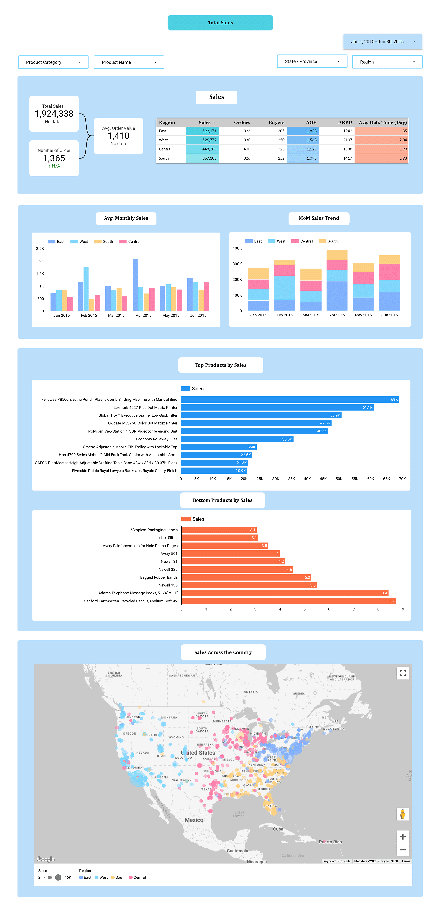

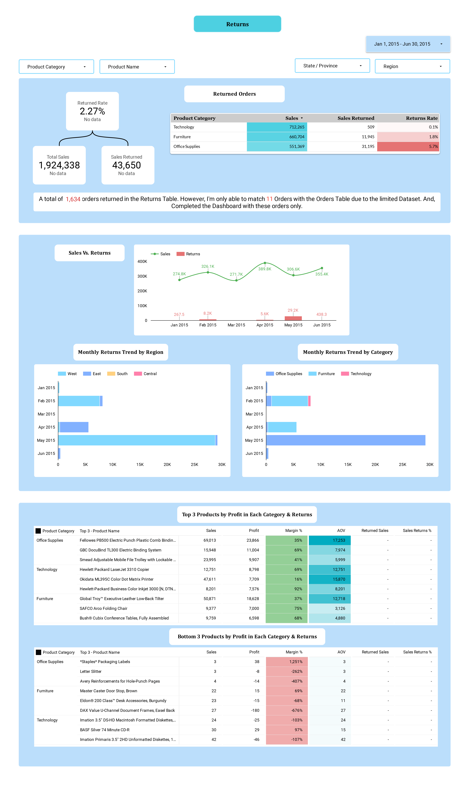
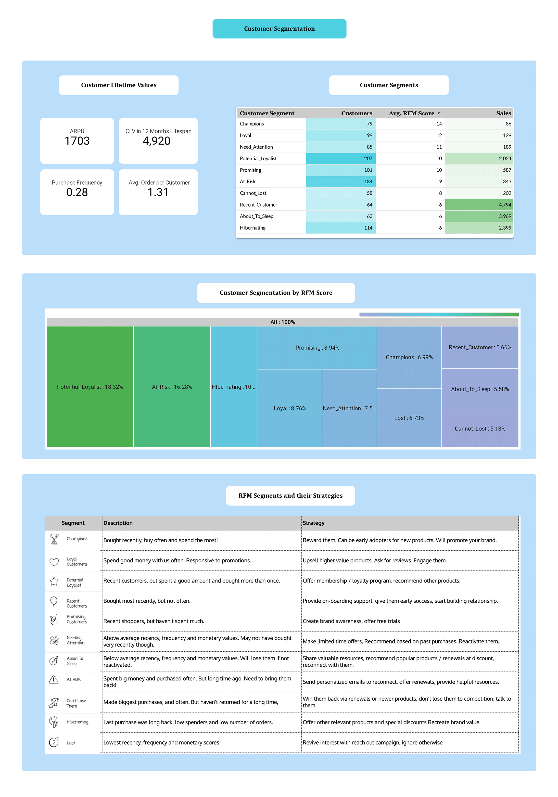

Developed an interactive dashboard using Data Studio (formerly Looker Studio) to analyze sales, returns, and
customer data from Orders, Returns, and Users datasets.
The project focused on key performance indicators such as average monthly sales per region,
total profit per customer, product profitability,
return rates, and customer segmentation using Recency, Frequency, and Monetary (RFM)
metrics.
By visualizing data through charts and KPIs, the dashboard provides actionable insights into
sales performance, customer profitability,
product efficiency, and order fulfillment. This includes identifying top-performing regions
and products, analyzing customer purchase patterns,
assessing return rates, and suggesting strategies for targeted marketing and reducing
returns.



